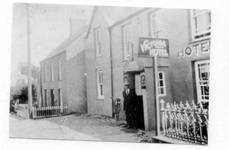

Victoria Inn
The first record of a Victoria Tavern in the village is in 1861, with Wiliam Williams as the publican. In 1874, John Roberts was the publican. Darock, the coastguard used to stay here. Doctor Jac conducted his surgery in one of the rooms here. At the beginning of 1987, Lloyd and Trouncer decided to close the Victoria Inn. After that, a group of locals came together to establish a cooperative company, launch a national appeal, buy the building, and reopen as a cooperative tavern on 20 May 1988.
Robert Roberts, the publican, in front of the Victoria Hotel.
Dewi Williams, Brynmor remembers that Darock, the coastguard who used to watch the Anglesey coast, in case the Germans came, used to come and stay in the Vic for periods between 1940 and 1950. Gwyn Ellis, Plas remembers that Darrock came to stay in the Ring when he inspected the loading and unloading of ships that came to the quarry. Dewi also remembers Dr. Kildare holding his surgery in the Vic, by the fireplace. The Inn was built in 1869. Dr Jack, the local Doctor used to hold his surgery consultations in the back room.
This is what Hywel Roberts, who was bought up in the Vic, remembers about his time there.
William Williams, the Victoria Tavern’s first publican, used to build houses, and he bought land by the school, hoping to build a tavern there so that he could run it independently from a brewery. He was refused permission, and it was stated that one public house was more than enough for a village the size of Llithfaen! In 1874, he went to live next door in Compton House.
 Robert Roberts, Hannah Roberts and the Coastguard that sometimes came to stay at the Victoria Hotel.
Robert Roberts, Hannah Roberts and the Coastguard that sometimes came to stay at the Victoria Hotel.
In 1874, John Roberts, my great grandfather, was chosen as a publican in the Victoria Inn, by the owners, Burton Brewery. He had seven children, and they were all born in the Vic, John Henry in 1875, Hannah in 1876, Ellen in 1878, Mary in 1880, William in 1881, Thomas (my grandfather) in 1884 and Llewelyn in 1887.
John Roberts built a row of four houses, on the road to Pwllheli, Rose Hill, Rose Villa, Islwyn and The Nest, all for his children. My grandparents went to live in Rose Hill, where my father was born in 1910.
John Roberts died in 1920 and his wife, Jane, died in 1921. Hannah, her daughter, and her husband, Robert Roberts, were tenants in the Vic after that. The coastguard used to stay in the Ring, and as part of his work, he inspected the loading of ships in the quarry.
After Robert died in 1933, Hannah, with the help of her sister Mary (Minnie), ran the Vic until the 1950s, when they decided to close.
When I was a child, Hannah and Minnie ran the Vic, and my grandfather used to take me there often to visit them.
At the begining of 1987, Lloyd and Trouncer decided to close down the Victoria Inn. For the first time in over a century, there was no pub in Llithfaen. A group of locals came together and established a co-operative company, launching a national appeal, eventually buying the building in May 1988. It re-opened as Tafarn y Fic, a co-operative tavern on 20 May 1988.